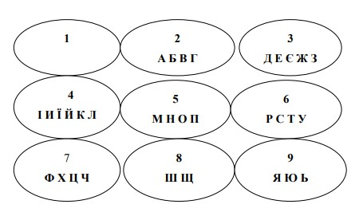
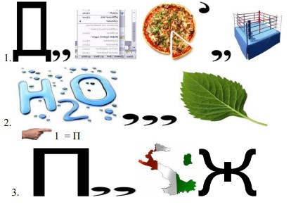

Тема заняття: Кредитування підприємств. Оцінювання фінансового стану підприємств. Фінансове планування на підприємствах.
Мета: систематизувати, поглибити та закріпити знання, отримані протягом вивчення розділів тем «Кредитування підприємств», «Фінансове забезпечення відтворення основних фондів підприємства», «Оцінювання фінансового стану підприємств», «Фінансове планування на підприємствах»
Питання семінарського заняття:
1. Розкрийте сутність та необхідність кредитування підприємств.
2. Охарактеризуйте етапи планування потреби в кредиті.
3. За якими класифікаційними ознаками можна класифікувати кредити, які надаються підприємствам?
4. Охарактеризуйте функції кредиту. Назвіть переваги та недоліки кожної.
5. Розкрийте принципи кредитування підприємства.
6. Поясніть суть та принципи банківського кредитування підприємств.
7. Назвіть основні етапи банківського кредитування.
8. Розкрийте сутність поняття «фінансовий стан підприємства».
9. Опишіть інформаційне забезпечення аналізу й оцінки фінансового стану підприємства.
10. Хто є користувачами результатів оцінки фінансового стану підприємства?
11. Охарактеризуйте ознаки фінансової стійкості підприємства.
12. Наведіть показники оцінки фінансового стану.
13. Які показники характеризують майновий стан підприємства?
14. Яка методика розрахунку показників оцінки ліквідності та платоспроможності?
15. Розкрийте порядок розрахунку показників фінансової стійкості та стабільності підприємства.
16. Наведіть основні симптоми фінансової кризи.
17. Дайте визначення санації підприємства.
18. Визначте мету фінансової санації, охарактеризуйте її основні види.
19. Назвіть випадки, коли підприємству потрібно проводити санацію.
20. Охарактеризуйте джерела санації.
21. Дайте визначення поняття «банкрутство», розкрийте види банкрутства.
22. Сформулюйте основні підстави для порушення справи про банкрутство підприємства-боржника.
23. Назвіть черговість задоволення умов кредиторів згідно з чинним законодавством України.
24. Сформулюйте основні обов’язки арбітражного керуючого (розпорядника майном, керуючого санацією, ліквідатора) при порушенні справи про банкрутство.
25. Розкрийте сутність фінансового планування.
26. Перелічіть основні принципи та завдання фінансового планування.
27. З’ясуйте методи фінансового планування.
28. Опишіть основні розділи фінансового плану підприємства.
29. Бізнес-план, поняття, мета складання, розділи.
30. Етапи розробки бізнес-плану.
Рекомендована література:
1. Аранчій В.І. Фінанси підприємства: навчальний посібник / В.І. Аранчій, В.Д. Чумак, Л.В. Бражник. – Полтава: РВ ПДАА, 2018. – 350 с.
2. Бердар М. М. Фінанси підприємств: навчальний посібник / М.М. Бердар. – К.: Центр учбової літератури, 2010. - 352 с.
3. Бедринець М. Д., Довгань Л.П. Фінанси підприємств: навчальний посібник . – К.: Центр учбової літератури, 2018. – 292 с.
4. Непочатенко О. О. Фінанси підприємств: підручник / О.О.Непочатенко, Н.Ю. Мельничук. – К.: Центр учбової літератури, 2019. – 504 с.
5. Фінанси підприємств: навч. посібник / За ред. Г. Я. Аніловської, І. Б. Висоцької. Львів: ЛьвДУВС, 2018. 440 с.
Приклади тестових завдань:
1. Комерційний кредит - це економічні відносини, які виникають між:
а) підприємствами;
б) комерційними банками і підприємствами;
в) державою та комерційними банками;
г) державою та підприємствами;
2. Кредитна лінія - це:
а) угода, за якою банк зобов'язується надати позичальнику кредити на раніше узгоджену суму протягом певного періоду;
б) згода, але не зобов'язання комерційного банку надати кредит позичальнику;
в) межа, яка встановлює максимальні й мінімальні розміри та терміни видачі кредиту одному позичальнику;
г) ліміти видачі кредитів.
3. Основною метою фінансової санації є:
а) покриття поточних збитків та усунення причин їхнього виникнення;
б) мобілізація фінансових ресурсів для проведення санаційних заходів;
в) задоволення вимог кредиторів;
г) виконання зобов'язань перед бюджетом.
4. Що таке фінансове планування?
а) баланс грошових коштів;
б) баланс доходів і видатків;
в) розрахунок потреби у фінансових ресурсах у плановому періоді;
г) розробка планів фінансового забезпечення загального розвитку підприємства на п'ять років.
5. Підставою про порушення справи про банкрутство підприємства може бути:
а) письмова заява будь-кого з кредиторів боржника;
б) якщо надані кредити не забезпечені заставою;
в) письмова заява потенційного санатора;
г) невизнання боржником претензії про відшкодування заборгованості.
Завдання І. Фінансова гра: «Дешифрувальник».
За допомогою поданих цифр та інформаційних даних відгадайте словосполучення:
1) 223205553264622559; 2) 66224205532646; 3) 54265444; 4) 5356954405532654; 5) 5365; 6) 24743; 7) 325264; 8) 75534052426; 9) 2658524045864; 10) 45864; 11) 242654404254624; 12) 664224466905256566; 13) 525656540246424.
Циферблат для розгадування слів по системі дешифрувальник:
Завдання ІІ. Розгадай ребус:
Завдання ІІІ. Відгадай слова:
1. РІБОТОТЬСОН.
2. ПИСАЗА.
3. РІШОГОВ ТОШИК.
4. МОРАН.
5. БЕРЕНЛЬТАНІСТЬ.
Завдання ІV. Розв’язати задачі:
Задача 1. Виробниче обʼєднання «Модуль» у квітні реалізувало продукції на загальну суму 160200 грн (у т.ч. ПДВ), в т.ч. на 70000 грн товари спеціального призначення для інвалідів за переліком, встановленим КМУ. Вартість придбаних матеріалів, які відносять на витрати виробництва 64000 грн (без ПДВ). Визначити суму ПДВ, що підлягає сплаті в бюджет.
Задача 2. Визначити величину податку на прибуток, який підлягає сплаті підприємством у бюджет, якщо відомо наступні дані: Доходи від реалізації товарів, послуг, робіт (без ПДВ) становлять 65000 грн. Доходи від операційної курсової різниі – 7860 грн. Доходи від оперативної оренди − 3700 грн. Сума штрафів, неустойки та пені, отриманих за рішенням суду – 2350 грн. Сума витрат у зв’язку з підготовкою і веденням виробництва – 23900 грн. Витрати на відрядження адмінперсоналу, документально підтверджені – 900 грн. Сплата штрафу контрагенту – 1000 грн. Доходів від іншої звичайної діяльності у підприємства не було. Які терміни сплати податку?
Задача 3. Визначити планову потребу в обігових коштах на наступний рік, якщо: Сукупна потреба в обігових коштах, розмір яких залежить від зміни витрат на виробництво у звітному році − 54,3 тис. грн. Сукупна потреба в обігових коштах, розмір яких не залежить від зміни витрат на виробництво у звітному році - 32,5 тис. грн. Зростання виробничої програми у плановому році проти звітного - 15 %. У плановому році в результаті реалізації заходів для поліпшення використання обігових коштів передбачається прискорення їх обороту на 3,1 %.